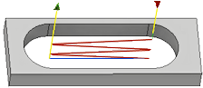
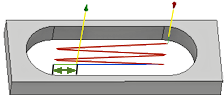

<div id="slot_backoffDistance"><p>工具が退避する前に最後の切削から離れる距離です。</p>
<table class="tipTable" cellspacing="10">
<tr>
<td><center></center></td>
</tr><tr>
<td><center><p><b>距離 0.0 インチ</b></p></center></td>
</tr></table>
<br>
<table class="tipTable" cellspacing="10">
<tr>
<td><center></center></td>
</tr><tr>
<td><center><p><b>距離 .200 インチ</b></p></center></td>
</tr></table>
</div>